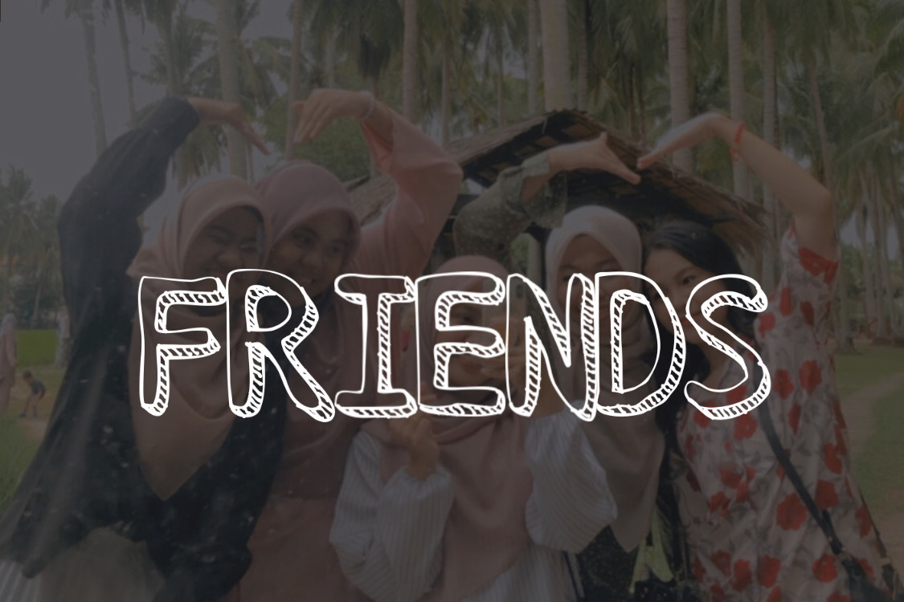

♡ ♡ ♡ ♡ ♡ ♡ ♡ ♡ ♡ ♡ ♡ ♡ ♡ ♡ ♡ Hi ! Welcome to my Personal Website and I hope you have a great day ! ♡ ♡ ♡ ♡ ♡ ♡ ♡ ♡ ♡ ♡ ♡ ♡ ♡ ♡ ♡
JOHANIES JOSAFIQ
🌼
Home
🐥
Biodata
🌱
Experience
🎓
Education
💓
Family
🌿
Gallery
1 / 6
1
2 / 6
2
3 / 6
3
4 / 6
4
5 / 6

5
6 / 6
6
Author: Johanies binti Josafiq
johanieslove@gmail.com
Copyright © 2022 Johanies binti Josafiq. All Rights Reserved.